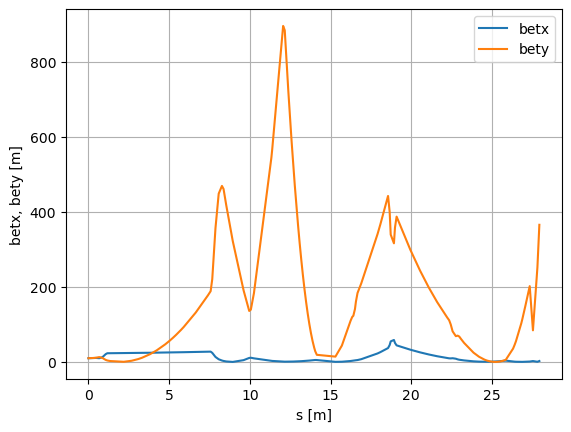
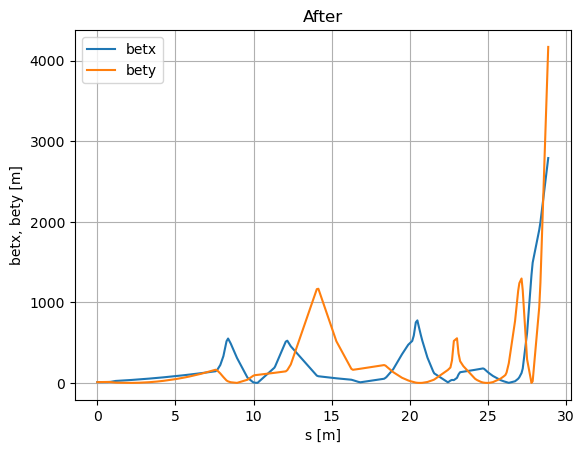
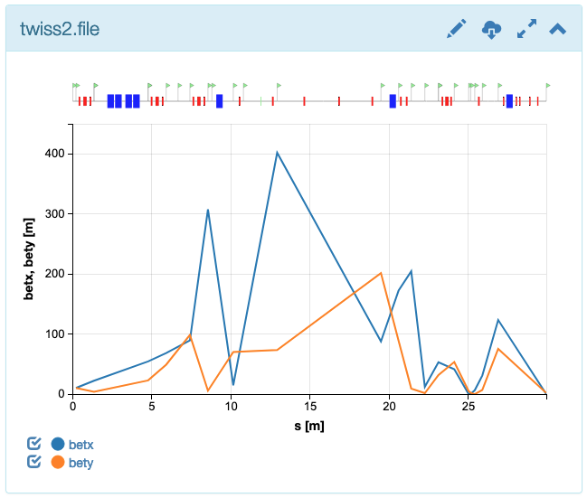

MAD-X Simulations¶
This section is based on the BL2_TDC ATF example.
Hint: See the List of predefined simulations in Sirepo for examples of identifiers for different beamlines.
[1]:
%run -i ../../../examples/prepare_flyer_env.py
import matplotlib.pyplot as plt
from sirepo_bluesky.sirepo_bluesky import SirepoBluesky
from sirepo_bluesky.madx_flyer import MADXFlyer
from sirepo_bluesky.sirepo_ophyd import create_classes
connection = SirepoBluesky("http://localhost:8000")
data, schema = connection.auth("madx", "00000001")
classes, objects = create_classes(connection.data,
connection=connection,
extra_model_fields=["rpnVariables"])
globals().update(**objects)
madx_flyer = MADXFlyer(connection=connection,
root_dir="/tmp/sirepo-bluesky-data",
report="elementAnimation250-20")
def madx_plan(parameter=ihq1, value=2.0):
yield from bps.mv(parameter.value, value)
return (yield from bp.fly([madx_flyer]))
(uid,) = RE(madx_plan())
hdr = db[uid]
tbl = hdr.table(stream_name="madx_flyer", fill=True)
print(tbl)
Transient Scan ID: 1 Time: 2022-11-04 22:49:51
Persistent Unique Scan ID: 'ba4606ce-6c4c-45d1-aa2c-092302ed86b1'
New stream: 'madx_flyer'
time madx_flyer_NAME madx_flyer_S \
seq_num
1 2022-11-04 22:50:00.135718584 BEAMLINE_FULL$START 0.0
2 2022-11-04 22:50:00.135756493 HO00 0.2
3 2022-11-04 22:50:00.135776281 HPOP1 0.2
4 2022-11-04 22:50:00.135790825 HT1HV 0.2
5 2022-11-04 22:50:00.135813713 HO01 0.37
... ... ... ...
157 2022-11-04 22:50:00.138013363 GO38 27.53831648
158 2022-11-04 22:50:00.138026714 GD32 27.81538296
159 2022-11-04 22:50:00.138040781 GO39 27.93538296
160 2022-11-04 22:50:00.138053656 GP12 27.93538296
161 2022-11-04 22:50:00.138068438 BEAMLINE_FULL$END 27.93538296
madx_flyer_BETX madx_flyer_ALFX madx_flyer_BETY madx_flyer_ALFY \
seq_num
1 10.0 -1.0 10.0 -1.0
2 10.408 -1.04 10.408 -1.04
3 10.408 -1.04 10.408 -1.04
4 10.408 -1.04 10.408 -1.04
5 10.76738 -1.074 10.76738 -1.074
... ... ... ... ...
157 31.50120211 -33.93712489 796.9658664 2290.998874
158 11.25336076 -95.35029686 2295.485782 -3780.049746
159 45.77258545 -192.3099089 3292.333819 -4527.017234
160 45.77258545 -192.3099089 3292.333819 -4527.017234
161 45.77258545 -192.3099089 3292.333819 -4527.017234
madx_flyer_DX madx_flyer_DY
seq_num
1 0.0 0.0
2 0.0 0.0
3 0.0 0.0
4 0.0 0.0
5 0.0 0.0
... ... ...
157 -0.0008130600296 0.2204931072
158 0.0003492332044 0.7817777
159 0.0008034259101 1.101499236
160 0.0008034259101 1.101499236
161 0.0008034259101 1.101499236
[161 rows x 9 columns]
/usr/share/miniconda3/envs/sirepo-bluesky-py3.9/lib/python3.9/site-packages/event_model/__init__.py:219: UserWarning: The document type 'bulk_events' has been deprecated in favor of 'event_page', whose structure is a transpose of 'bulk_events'.
warnings.warn(
Get the data via databroker API¶
[2]:
s = tbl["madx_flyer_S"]
betx = tbl["madx_flyer_BETX"]
bety = tbl["madx_flyer_BETY"]
plt.figure()
plt.plot(s, betx, label="betx")
plt.plot(s, bety, label="bety")
plt.xlabel("s [m]")
plt.ylabel("betx, bety [m]")
plt.grid()
plt.legend()
[2]:
<matplotlib.legend.Legend at 0x7f6ef7595040>

Get the data from the original TFS file¶
[3]:
import os
import tfs
for name, doc in hdr.documents():
if name == "resource":
resource_doc = doc
print(resource_doc)
filename = os.path.join(resource_doc["root"], resource_doc["resource_path"])
df = tfs.read(filename)
Resource
========
path_semantics : posix
resource_kwargs :
resource_path : 2022/11/04/27079130-b05c-4b43-aad8-8d37d1a9bd37.tfs
root : /tmp/sirepo-bluesky-data
run_start : ba4606ce-6c4c-45d1-aa2c-092302ed86b1
spec : madx
uid : 99af994b-7a18-4aab-bee3-e4ead40e609e
[4]:
df
[4]:
| NAME | S | BETX | ALFX | BETY | ALFY | DX | DY | |
|---|---|---|---|---|---|---|---|---|
| 0 | BEAMLINE_FULL$START | 0.000000 | 10.000000 | -1.000000 | 10.000000 | -1.000000 | 0.000000 | 0.000000 |
| 1 | HO00 | 0.200000 | 10.408000 | -1.040000 | 10.408000 | -1.040000 | 0.000000 | 0.000000 |
| 2 | HPOP1 | 0.200000 | 10.408000 | -1.040000 | 10.408000 | -1.040000 | 0.000000 | 0.000000 |
| 3 | HT1HV | 0.200000 | 10.408000 | -1.040000 | 10.408000 | -1.040000 | 0.000000 | 0.000000 |
| 4 | HO01 | 0.370000 | 10.767380 | -1.074000 | 10.767380 | -1.074000 | 0.000000 | 0.000000 |
| ... | ... | ... | ... | ... | ... | ... | ... | ... |
| 156 | GO38 | 27.538316 | 31.501202 | -33.937125 | 796.965866 | 2290.998874 | -0.000813 | 0.220493 |
| 157 | GD32 | 27.815383 | 11.253361 | -95.350297 | 2295.485782 | -3780.049746 | 0.000349 | 0.781778 |
| 158 | GO39 | 27.935383 | 45.772585 | -192.309909 | 3292.333819 | -4527.017234 | 0.000803 | 1.101499 |
| 159 | GP12 | 27.935383 | 45.772585 | -192.309909 | 3292.333819 | -4527.017234 | 0.000803 | 1.101499 |
| 160 | BEAMLINE_FULL$END | 27.935383 | 45.772585 | -192.309909 | 3292.333819 | -4527.017234 | 0.000803 | 1.101499 |
161 rows × 8 columns
[5]:
plt.figure()
plt.plot(df["S"], df["BETX"], label="betx")
plt.plot(df["S"], df["BETY"], label="bety")
plt.xlabel("s [m]")
plt.ylabel("betx, bety [m]")
plt.grid()
plt.legend()
[5]:
<matplotlib.legend.Legend at 0x7f6eef315b80>

Screenshot from Sirepo website¶
